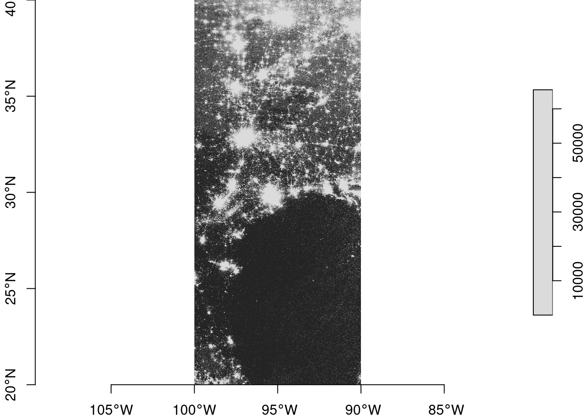
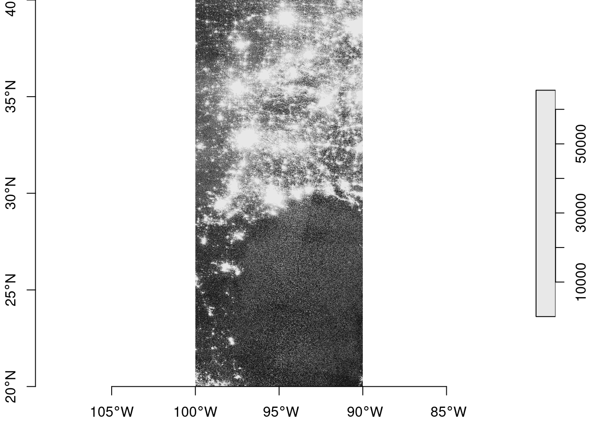
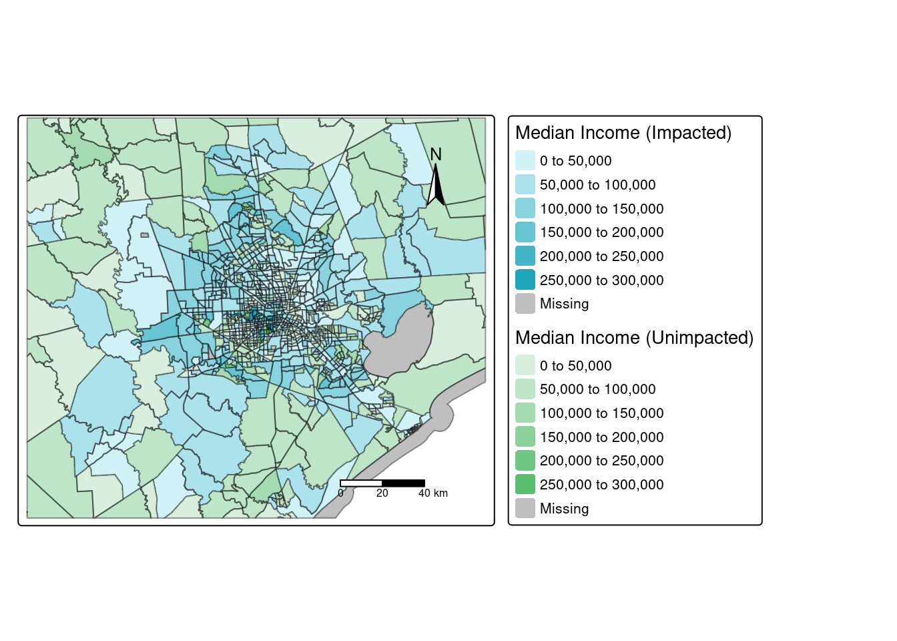

View Code
library(tidyverse)
library(stars)
library(sf)
library(tmap)
library(gridExtra)
library(here)In February 2021, severe winter storms in the United States caused a major power outage in the state of Texas. The loss of power resulted in over 4.5 million homes and businesses left without power, and several deaths.1 This analysis uses remotely sensed night light data to assess the impact and distribution of these blackouts. Data from the U.S. Census Bureau will be added to investigate if socioeconomic factors affect the recovery of power within the community.
Data on the distribution of artificial night over the Houston area was acquired from the Visible Infrared Imaging Radiometer Suite (VIIRS) sensor, which is aboard the Suomi satellite. VNP46A1 will be used to visualize the difference in night light.2 This data is available through NASA’s Level-1 and Atmospheric Archive & Distribution System Distributed Active Archive Center (LAADS DAAC). Remote sensing images from 2021-02-07 and 2021-02-16 were selected, as this data was collected before and after the storm, and there is minimal cloud cover.
Vehicles produce a large portion of night lights that are detected via remote sensing. Removing areas near highways from this analysis can decrease the chance of falsely identifying areas with low traffic as blackout zones. Data on highways was accessed through Geofabrik, and collected by OpenStreetMap (OSM). Geobrik also cleans and provides OpenStreetMap(OSM) data on homes. This data was used to find the number of homes impacted by the blackouts.
Data on individual homes is not available, but socioeconomic information from the U.S. Census Bureau provides income information within census tracts. The census data will be useful for estimating the average income for homes impacted by the blackouts.
library(tidyverse)
library(stars)
library(sf)
library(tmap)
library(gridExtra)
library(here)Night light data from NASA is distributed as 10x10 degree tiles. In order to capture all of the Houston area, there are two tiles from each night of interest.
# read in Houston tiles from 2021-02-07
night_tile7_h5 <- read_stars(here('data/VNP46A1/VNP46A1.A2021038.h08v05.001.2021039064328.tif'))
night_tile7_h6 <- read_stars(here('data/VNP46A1/VNP46A1.A2021038.h08v06.001.2021039064329.tif'))
# read in Houston tiles from 2021-02-16
night_tile16_h5 <- read_stars(here('data/VNP46A1/VNP46A1.A2021047.h08v05.001.2021048091106.tif'))
night_tile16_h6 <- read_stars(here('data/VNP46A1/VNP46A1.A2021047.h08v06.001.2021048091105.tif'))
# combine data tiles
night_tile7 <- st_mosaic(night_tile7_h5, night_tile7_h6)
night_tile16 <- st_mosaic(night_tile16_h5, night_tile16_h6)
# remove uncombined tiles from env
rm(night_tile7_h5, night_tile7_h6, night_tile16_h5, night_tile16_h6)Standard Query Language, or SQL, was used to define parameters for filtering home and road data as it was read in. For the home search, buildings identified as residential, apartments, house, static caravans, or detached were included.
Home data:
#store query (data selection)
query1 <- "SELECT * FROM gis_osm_buildings_a_free_1 WHERE (type IS NULL AND name IS NULL) OR type in ('residential', 'apartments', 'house', 'static_caravan', 'detached')"
# read in data using query to filter
homes_raw <- st_read(here("data/gis_osm_buildings_a_free_1.gpkg"), query = query1)
# reproject data
homes_raw <- st_transform(homes_raw, crs = "EPSG:3083")You can view the original night light rasters here:
plot(night_tile7,main = NULL, axes = TRUE) 
plot(night_tile16, main = NULL, axes = TRUE)
Road data:
# define query (data selection)
query <- "SELECT * FROM gis_osm_roads_free_1 WHERE fclass='motorway'"
#load in data
highway_raw <- st_read(here("data/gis_osm_roads_free_1.gpkg"), query = query)
# reproject highway data
highway_raw <- st_transform(highway_raw, crs = "EPSG:3083")
# remove queries from environment
rm(query, query1)The census data is a multi-layer geodatabase, where every layer contains a subset of the fields documents in the ACS metadata. You can use the st_layers() function to learn more about the contents of the geodatabase, but here the layers are known and called in directly. Census tract geometries are in the ACS_2019_5YR_TRACT_48_TEXAS layer and income data is stored in the X19_INCOME layer. From the metadata we also know the B19013e1 column contains median income values.
#store file path to geodatabase layers
path <- here("data/ACS_2019_5YR_TRACT_48_TEXAS.gdb")
#store income and geometry layers
tract_layer_raw <- st_read(dsn = path, layer = "ACS_2019_5YR_TRACT_48_TEXAS")
income_layer_raw <- st_read(dsn = path, layer = "X19_INCOME")
#filter full income layer to median income column
income <- income_layer_raw %>% select(B19013e1, GEOID) %>% #filter
rename(GEOID_Data = GEOID, #rename columns
median_income = B19013e1)
# filter and reproject Census tract layer
tract <- tract_layer_raw %>%
select(GEOID_Data, NAMELSAD) %>%
rename(census_tract = NAMELSAD) %>%
st_transform(crs = "EPSG:3083") #reproject By examining the change in night light intensity, we can potentially uncover areas where the storms affected power supply. For this analysis, blackout areas will be defined as areas that experienced a drop of more than 200 nW cm-2sr-1. Using this information, in conjunction with road data, we can create a mask that represents areas where blackouts occurred.
Creating a blackout mask:
# find the change in night light intensity
light_diff <- (night_tile7 - night_tile16)
# reclassify raster to define areas with and without blackouts
light_diff_reclassified <- cut(x = light_diff,
breaks = c(-Inf, 200, Inf), #200 as blackout cutoff value
labels = c("No Blackout", "Blackout"))
# assign NAs to non-blackout areas (create mask)
light_diff_reclassified[light_diff_reclassified == "No Blackout"] <- NA
# convert blackout mask from raster to vector
lights_bo_mask <- st_as_sf(light_diff_reclassified) %>% #vectorize
st_make_valid() #fix invalid geometriesCrop mask to area of interest (Houston):
# create matrix using lat/long points that contain houston
houston_matrix <- matrix(c(-96.5, 29, -96.5, 30.5, -94.5, 30.5, -94.5, 29, -96.5, 29),
ncol = 2, byrow = TRUE)
# convert points to poly
houston_polygon <- st_sfc(st_polygon(list(houston_matrix)) #create polygon using matrix
, crs = "EPSG:4326") #assign CRS (based on lat/long points)
# crop blackout (bo) mask using houston polygon
houston_lights_bo_mask <- st_crop(lights_bo_mask, st_bbox(houston_polygon)) %>%
st_transform(crs = "EPSG:3083") #update crs to match all dataExclude ares within 200m of highways:
#create buffer 200m away from roads
hwy_buffer <- st_union(st_buffer(x = highway_raw, dist = 200))
# isolate blackout areas further than 200m from highway (apply buffer)
bo_areas <- st_difference(houston_lights_bo_mask, hwy_buffer)
# count number of blackout areas
glue::glue('Blackout areas further than 200m away from a highway: {nrow(bo_areas)}')Blackout areas further than 200m away from a highway: 7247Now that blackout areas at least 200m away from highways have been converted into a vector mask, it can be applied over the home data. This will return the number of homes that were impacted by the blackout.
#filter to homes within blackout area
bo_homes <- homes_raw %>% st_filter(y = bo_areas, .predicate = st_intersects)
# count the number of impacted homes
glue::glue("Number of homes in blackout areas: {nrow(bo_homes)}")Number of homes in blackout areas: 157408The final step is to assign socioeconomic data to the 157410 homes in the Houston area that have experienced blackouts.
Finding census tracts impacted by blackout:
# join income and census geom data
inc_tract_joined <- inner_join(tract, income, by = "GEOID_Data")
# calculate mean median income for each census tract
inc_tract_joined <- inc_tract_joined %>%
group_by(census_tract) %>%
summarise(median_income = mean(median_income, na.rm = TRUE)) %>%
st_as_sf()
# spatially join home home data with census data
houston_polygon <- st_transform(houston_polygon, crs = "EPSG:3083") #update polygon CRS
impacted <- st_filter(x = inc_tract_joined, y = bo_homes, .predicate = st_intersects) %>%
st_crop(houston_polygon) #crop in case areas outside of Houston are present# drop geometries for faster anti-join
impacted_no_geom <- impacted %>% st_drop_geometry()
# antijoin to find areas NOT impacted by black out
unimpacted <- anti_join(x = inc_tract_joined, y = impacted_no_geom, by = "census_tract")
# crop unimpacted areas to Houston polygon
unimpacted <- st_crop(unimpacted, houston_polygon) #crop unimpacted areas
# count impacted and unimpacted census tracts
glue::glue('Number of impacted census tracts in Houston area: {nrow(impacted)}')Number of impacted census tracts in Houston area: 754glue::glue('Number of unimpacted census tracts in Houston area: {nrow(unimpacted)}')Number of unimpacted census tracts in Houston area: 373Mapping income of areas impacted and impacted by blackouts:
tm_shape(impacted) +
tm_fill(fill = 'median_income', palette = c('#d0f2f7', '#20a6bc'),
title = "Median Income (Impacted)") +
tm_lines(alpha = 0.4) +
tm_shape(unimpacted) +
tm_fill(fill = 'median_income', palette = c('#d8efdd', '#5abd6f'),
title = "Median Income (Unimpacted)") +
tm_lines(alpha = 0.4) +
tm_compass(type = "arrow", position = c("right", "top"), size = 2) +
tm_scale_bar()